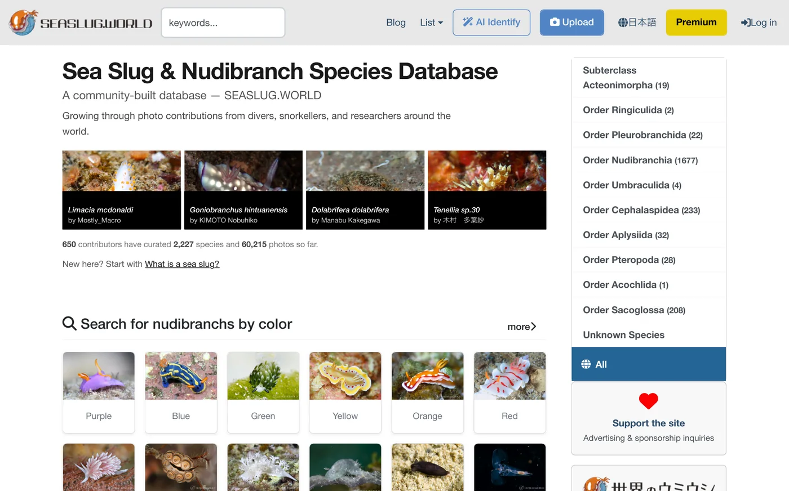
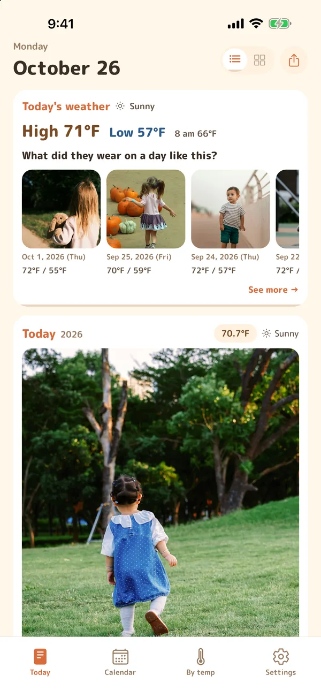
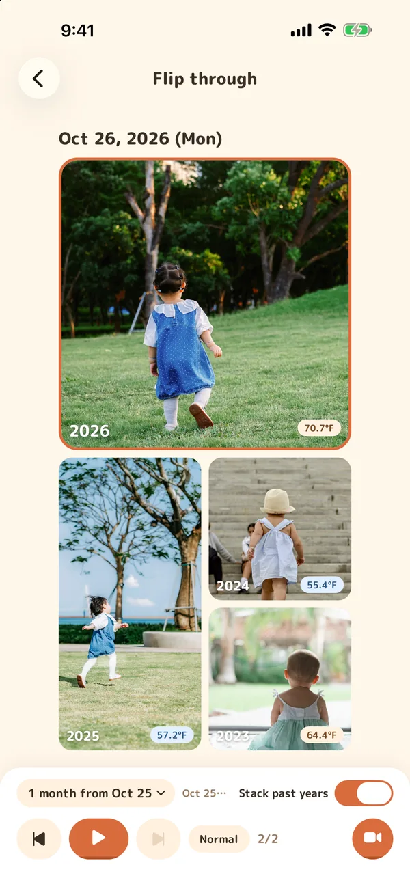

SEASLUG.WORLD
世界のウミウシ
A sea slug field guide made by divers. Photos from divers around the world, sorted by species. Contributors can keep their own field guide on the site.

世界のウミウシ
A sea slug field guide made by divers. Photos from divers around the world, sorted by species. Contributors can keep their own field guide on the site.

かさね日記
What did I wear the last time it was this warm? One photo a day, with the temperature and weather added for you. See it next to the same day last year and the year before. Your photos stay on your phone.


きれるまえ
Find the cheapest place to restock household items. Stick a QR code on your washing machine or shelf, scan it when you're about to run out, and it compares Rakuten, Amazon and Yahoo! Shopping, including shipping and points. Japan only, in Japanese.

脆弱性を AI で診断・修正するプラグイン
For sites that can’t update because of custom code. AI reads the site, including the code built just for it, and fixes the weak spots it finds after the owner approves each change. If the site doesn’t open after a fix, it rolls back on the spot. It does not read your database or access logs. For WordPress and EC-CUBE, a store system used in Japan. Starts with a free check.

データ移行プラグイン
Moves members, products, categories and orders from older EC-CUBE (2.x / 3.x / 4.0 / 4.1) to 4.2 / 4.3. The store page is in Japanese.